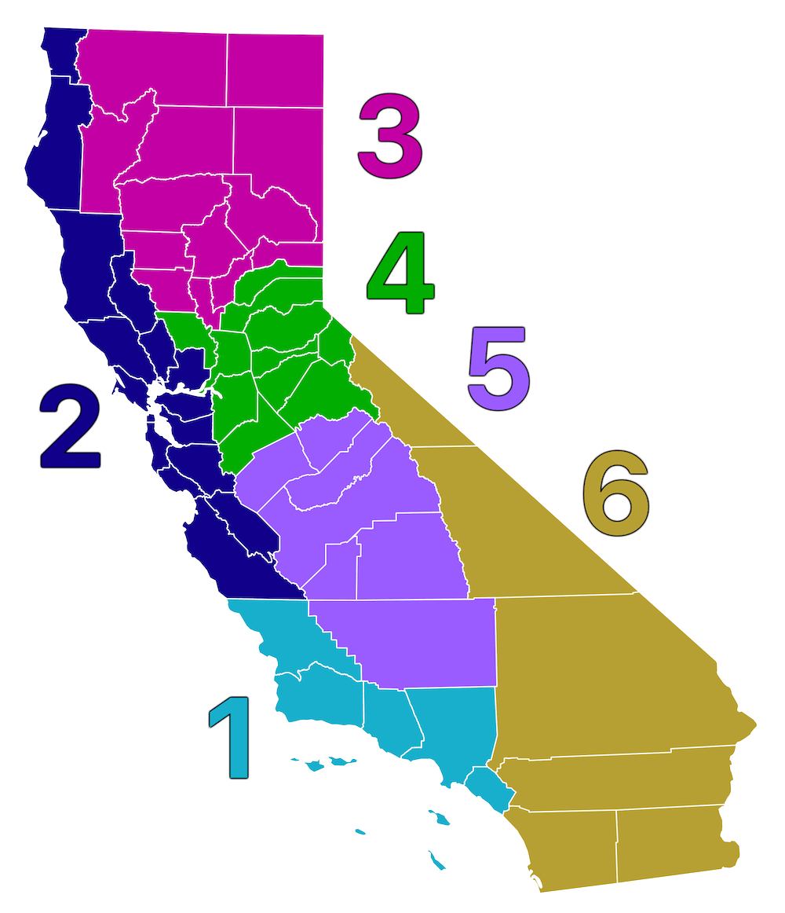

California has administered doses as of .
Daily rate: new doses per day.
Cumulative COVID-19 vaccination doses administered in California
This data counts single doses and may not equal the total number of
people vaccinated as current regimens require two doses.
Daily rate of new COVID-19 vaccination doses administered in
California
The daily rate has been averaged for days that were missing data.
Cumulative COVID-19 vaccination doses per 100 people by region
